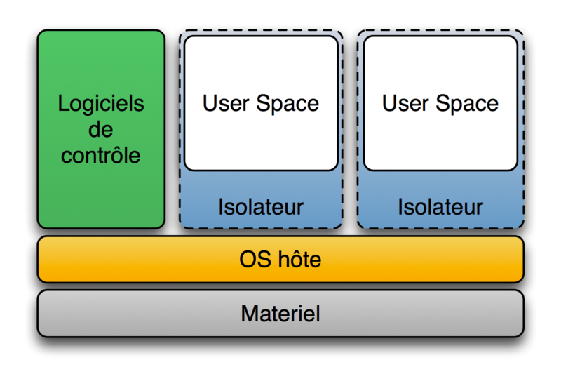
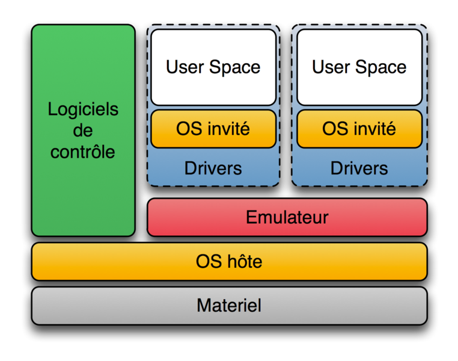
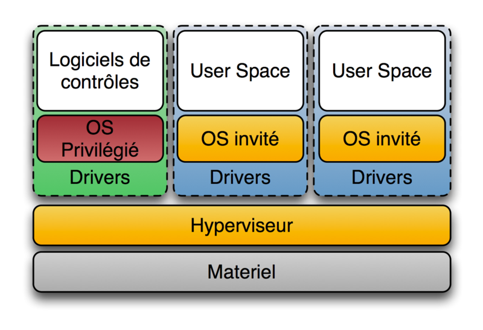
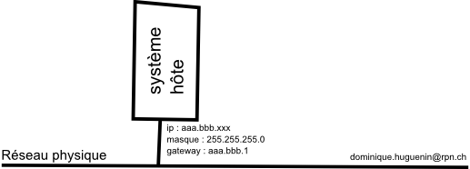
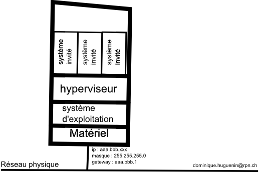
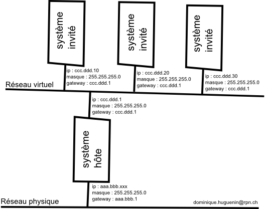

Virtualisation - Éléments théoriques
dominique huguenin (dominique.huguenin@rpn.ch) -Définition
La virtualisation consiste à faire fonctionner un ou plusieurs systèmes d’exploitation / applications comme un simple logiciel, sur un ou plusieurs ordinateurs - serveurs / système d’exploitation, au lieu de ne pouvoir en installer qu’un seul par machine. Ces ordinateurs virtuels sont appelés serveur privé virtuel (Virtual Private Server ou VPS) ou encore environnement virtuel (Virtual Environment ou VE).
[1]
Isolateur

Par exemple : chroot (isolation changement de racine) ; LXC : libre, (usage des Cgroups du noyau Linux) …
Un isolateur est un logiciel permettant d’isoler l’exécution des applications dans ce qui sont appelés des contextes, ou bien zones d’exécution. L’isolateur permet ainsi de faire tourner plusieurs fois la même application dans un mode multi-instance (plusieurs instances d’exécution) même si elle n’était pas conçue pour ça. Cette solution est très performante, du fait du peu d’overhead (temps passé par un système à ne rien faire d’autre que se gérer), mais les environnements virtualisés ne sont pas complètement isolés. La performance est donc au rendez-vous, cependant on ne peut pas vraiment parler de virtualisation de systèmes d’exploitation. Uniquement liés aux systèmes Linux, les isolateurs sont en fait composés de plusieurs éléments et peuvent prendre plusieurs formes.
Par exemple : chroot (isolation changement de racine) ; LXC : libre, (usage des Cgroups du noyau Linux) …
[1]
Hyperviseur de type 2

Par exemple : Oracle VM VirtualBox (libre), logiciels VMware (VMware Fusion, VMware Player, VMware Server, VMware Workstation), logiciels libres (QEMU : émulateur de plateformes x86, PPC, Sparc, et bochs : émulateur de plateforme x86) …
Un hyperviseur de type 2 est un logiciel (généralement assez lourd) qui tourne sur l’OS hôte. Ce logiciel permet de lancer un ou plusieurs OS invités. La machine virtualise ou/et émule le matériel pour les OS invités, ces derniers croient dialoguer directement avec ledit matériel. Cette solution est très comparable à un émulateur, et parfois même confondue. Cependant l’unité centrale de calcul, c’est-à-dire le microprocesseur, la mémoire de travail (ram) ainsi que la mémoire de stockage (via un fichier) sont directement accessibles aux machines virtuelles, alors que sur un émulateur l’unité centrale est simulée, les performances en sont donc considérablement réduites par rapport à la virtualisation.
Cette solution isole bien les OS invités, mais elle a un coût en performance. Ce coût peut être très élevé si le processeur doit être émulé, comme cela est le cas dans l’émulation. En échange cette solution permet de faire cohabiter plusieurs OS hétérogènes sur une même machine grâce à une isolation complète. Les échanges entre les machines se font via les canaux standards de communication entre systèmes d’exploitation (TCP/IP et autres protocoles réseau), un tampon d’échange permet d’émuler des cartes réseaux virtuelles sur une seule carte réseau réelle.
Par exemple : Oracle VM VirtualBox (libre), logiciels VMware (VMware Fusion, VMware Player, VMware Server, VMware Workstation), logiciels libres (QEMU : émulateur de plateformes x86, PPC, Sparc, et bochs : émulateur de plateforme x86) …
[1]
Hyperviseur de type 1

Par exemple : VMware vSphere (anciennement VMware ESXi et VMware ESX), KVM (libre) …
Un hyperviseur de type 1 est comme un noyau système très léger et optimisé pour gérer les accès des noyaux d’OS invités à l’architecture matérielle sous-jacente. Si les OS invités fonctionnent en ayant conscience d’être virtualisés et sont optimisés pour ce fait, on parle alors de para-virtualisation (méthode indispensable sur Hyper-V de Microsoft et qui augmente les performances sur ESX de VMware par exemple). Actuellement l’hyperviseur est la méthode de virtualisation d’infrastructure la plus performante mais elle a pour inconvénient d’être contraignante et onéreuse, bien que permettant plus de flexibilité dans le cas de la virtualisation d’un centre de traitement de données.
Par exemple : VMware vSphere (anciennement VMware ESXi et VMware ESX), KVM (libre) …
[1]
Infrastructure physique

Hyperviseur

Infrastructure virtuelle

Références
- Virtualisation — Wikipédia, https://fr.wikipedia.org/wiki/Virtualisation